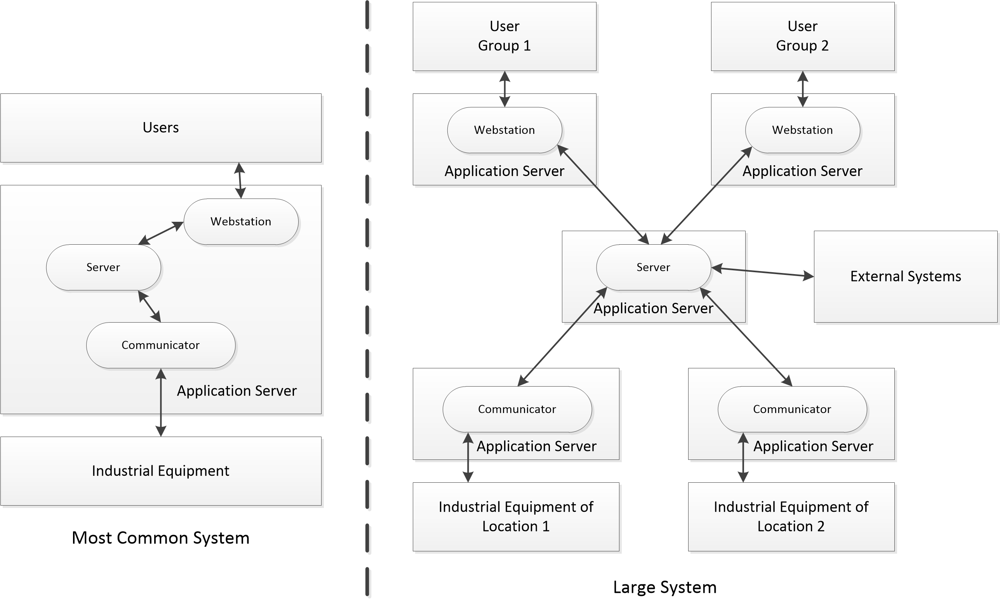

La arquitectura de Rapid SCADA es del tipo multi-nivel y distribuida (ver Figura 1). Las aplicaciones se pueden ejecutar en un solo servidor o en múltiples ordenadores conectados en una red. Los controladores pueden usar canales de comunicación de diferentes tipos para conectarse a un sistema. Los principales factores que determinan la configuración del sistema son el número de ubicaciones de los equipos, la distancia entre ellos, la estimación de la actividad del usuario final y las restricciones de los sistemas externos.

Figura 1. Arquitectura del Software
Rapid SCADA incluye las siguientes aplicaciones principales:
El acceso a los datos mediante la tecnología web simplifica significativamente la implementación y el mantenimiento del sistema, lo cual es especialmente importante para un gran número de usuarios.
Entre los dispositivos habitualmente controlados por un sistema SCADA están los medidores de energía eléctrica, medidores de calefacción, alarmas de incendio y de seguridad, controladores de acceso y otros equipos.